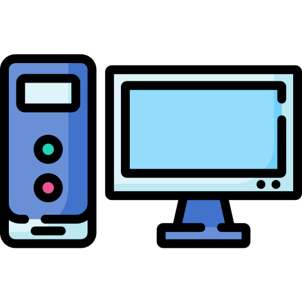

 ¿nos pueden rastrear con ellas?
La dirección IP o Internet Protocol es una dirección única que se asigna a cada aparato conectado a internet, incluyendo ordenadores o dispositivos móviles. Estas direcciones son accesibles fácilmente para los usuarios en distintas bases de datos que existen en la red. Una IP consiste en 4 dígitos separados por puntos que pueden ir del 0.0.0.0 al 255.255.255.255. En principio, estos números pueden no decir nada, pero en realidad ofrecen bastante información acerca de la ubicación del equipo. Cabe destacar que la dirección IP indica la ubicación del proveedor de internet que tienes contratado. Por tanto, no es capaz de descifrar la ubicación exacta de un dispositivo. En su lugar, mostrará la dirección postal de tu proveedor de internet.

.png) historia de las computadoras
historia de las computadoras
 ¿por que lo hice de este tema?
¿por que lo hice de este tema?